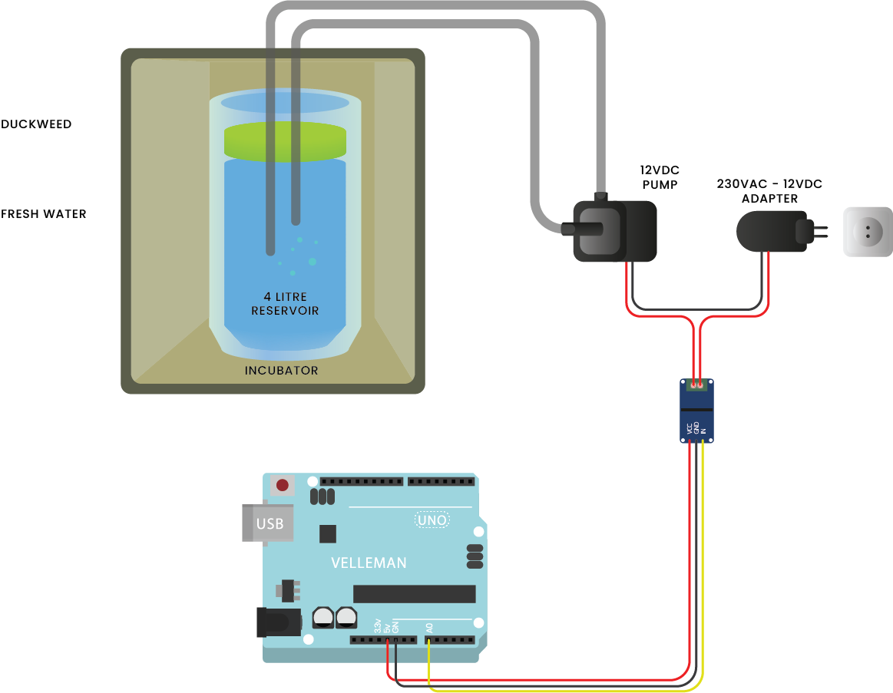
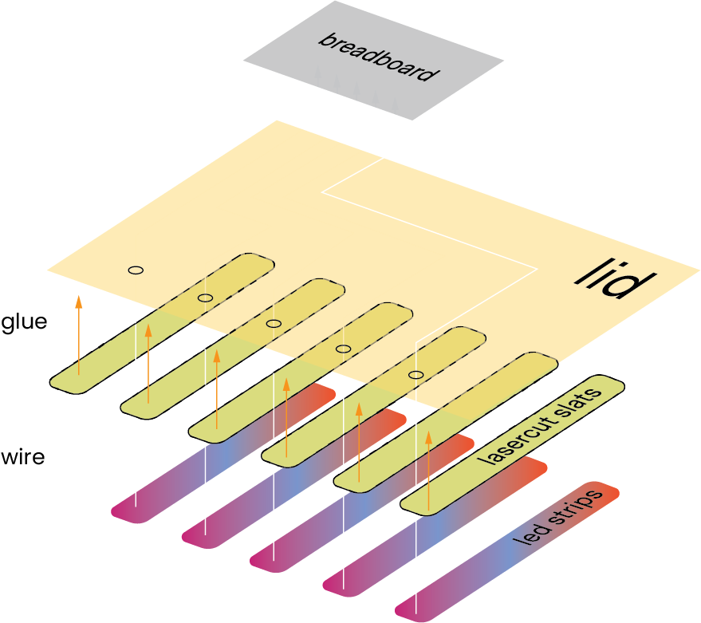
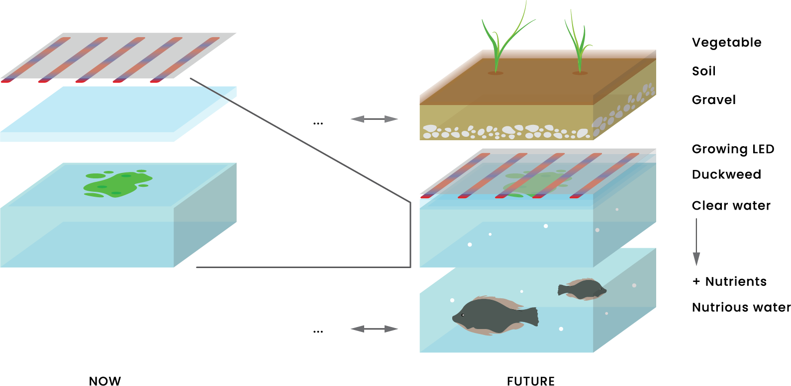
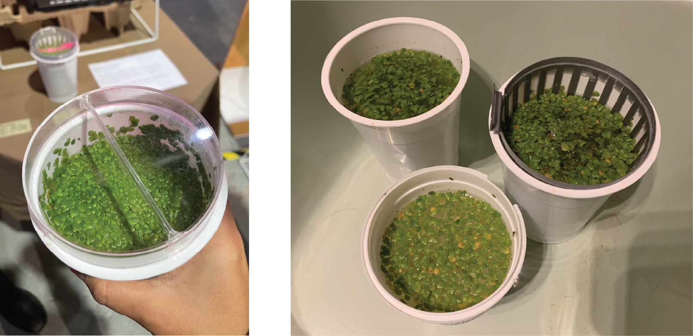

TERM 1
Duckweed Incubation
This Intervention resulted out of sheer curiosity to study future food alternatives through culture cultivation. During a random online-stroll through the scientific articles, I and Ruben managed to find an article about the specie Spirodela polyrrhiza, which belongs to the family of duckweeds. It has a miniature body reduced to a floating disc from which several roots hang, without stems or leaves.
This plant, catalogued as extinct in Catalonia, has been recently found in the Ebro River and the Vallvidrera reservoir. Instantly, we began the hunt for this plant using various resources like the iNaturalist app (discovered in the Bio Zero module). Instead, we found a plant from the same subfamily very close to the Valldaura campus and reservoir.
Lemna Minor or 'Common Duckweed' is a promising source of proteins and healthy amino acids that humans can't produce. The plant from the subfamily Lemnoideae also has bio-remediation and environment-friendly production properties. And thus, this project simply began the exploration, cultivation and safe consumption of this plant for human food products as a food alternative of the future. In order to achieve successful inclusion, duckweed needs to be presented to consumers in an acceptable way to tackle the perception of algae as an in-consumable product.

Fig. 9.1 Sample collection from a water deposit in Collserola National Park
For the medium, desanitizing and clarification of water bodies is being studied using Potassium Permanganate and bleach. The version I of the Duckweed Incubator was presented at the Design Dialogues event with the then-current algorithms. Currently, the growth of Duckweed in various types of mediums like lake water, tap water and nutrient water is being tested. Various grades of growth and reproduction are noted during this process to determine the optimal and hygienic growth of this plant.

Fig. 9.2 Testing of Grow-lights to achieve a perfect ‘growing spectrum’

Fig. 9.3 First Iteration of the Arduino setup and the array used for the final prototype

The aim is to grow enough to be consumed and tested before jumping on the scalar production phase. The next goals are to test rates of growth and certifying it food-grade scientifically alongside assistance from Nuria Conde and Jonathan Minchin.
The trails and discussions have already been commenced upon.

Fig. 9.4 Growth trials is different mediums/kinds of water
_